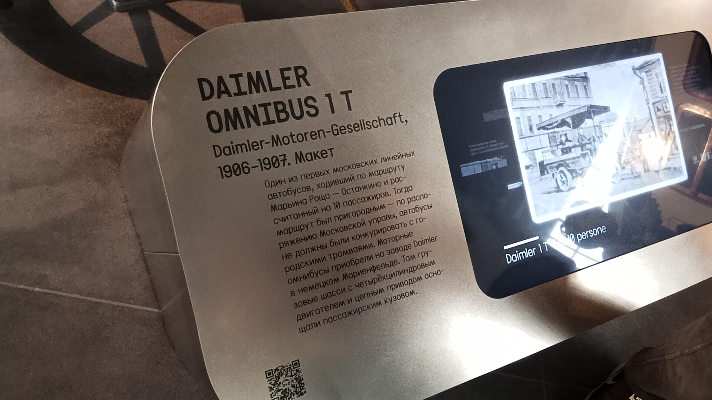

Daimler Omnibus 1 T
Daimler Omnibus 1 T Typ 10 personen — первый московский автобус, вышедший на улицы 18 июля 1907 года. Приобретён частной конторой графа А. Д. Шереметева для движения по пригородному маршруту между Марьиной Рощей и Останкино.
Это был автомобиль длиной чуть более 5 метров, снабжённый 4-цилиндровым двигателем мощностью от 12 до 18 лошадиных сил, цепным приводом и грузошинами. Для пассажиров переоборудовали грузовую платформу, разместив две мягкие лавки на 10 человек.
Общая информация
🏭 Производство
Завод-изготовитель: Daimler-Motoren-Gesellschaft (Германия)
Место сборки: Мариенфельде, пригород Берлина
Годы выпуска: 1906–1907 (третье поколение после модернизации)
Состояние: оригиналы не сохранились, в Музее — полноразмерный макет
📍 Эксплуатация
Первый маршрут: Марьина Роща — Останкино
Дата открытия: 18 июля 1907 года
Владелец: граф А. Д. Шереметев
Назначение: пригородный «дачный» маршрут
⭐ Первый автобус Москвы: Настоящая революция в пассажирских перевозках произошла в Москве 18 июля 1907 года, когда первую попытку выйти на московские улицы предпринял совершенно иной вид транспорта, не похожий на прежние, — автобус. До этого москвичи ездили на конке, паровом трамвае и электрическом трамвае, но моторный омнибус стал принципиально новым словом.
Технические характеристики
Основные параметры
Длина: чуть более 5 м
Двигатель: 4-цилиндровый
Мощность: 12–18 л.с.
Привод: цепной
Шины: грузошины
Пассажирский салон
Паспортная вместимость: 10 человек
Фактическая: 12–14 человек (по данным прессы)
Сиденья: две мягкие лавки
Защита от непогоды: простейший тент и опускающиеся шторы
Кузов: переоборудованная грузовая платформа
История
Третье поколение омнибусов DMG
Контора приобрела моторные омнибусы на заводе Daimler в немецком Мариенфельде — пригороде Берлина, куда в 1903 году было передано производство всех коммерческих автомобилей Daimler-Motoren-Gesellschaft. В том же году компания представила обновлённое, третье поколение моторных омнибусов, в котором впервые было предложено деление на три серии в соответствии с полезной нагрузкой: 1 T, 2 T и 3 T. Серия 1 T выпускалась в облегчённой и обычной версиях с кузовом на шесть и десять пассажиров соответственно.
Модернизация третьего поколения
Всего через несколько лет, в 1905–1906 годах, третье поколение модернизировали. Автомобили всех серий снабдили новыми двух- и четырёхцилиндровыми двигателями мощностью от 8 до 35 лошадиных сил, а серия 1 T также получила цепной привод. Наиболее заметными внешними изменениями стали сотовый радиатор и угловатая форма капота. Выпуск обновлённого третьего поколения продолжался до 1907 года.
Первый рейс в Москве
Первым московским автобусом стал Daimler Omnibus 1 T Typ 10 personen, приобретённый частной конторой для организации движения по пригородному маршруту. Газета «Русское слово» писала: «На днях открывается автомобильное движение общественного пользования между Москвой и Останкиным. Первым предпринимателем, осуществившим это дело, является гр. А. Д. Шереметев. Оборудованные им автомобили построены в виде многоместных линеек. За проезд от Москвы до Останкина предполагается взимать 15 коп.».
Второй автомобиль — 6-местный
Вторым автомобилем, курсировавшим с 1907 года между Москвой и Останкино, тоже был «Даймлер» серии 1 T, но в облегчённом варианте с кузовом на шесть пассажиров — Daimler Omnibus 1 T Typ 6 personen (1906–1907). Журнал «Искры» опубликовал фотографию, снабжённую короткой подписью: «14-местный автомобиль, курсирующий между Москвой и Останкиным», — паспортная вместимость в 10 человек, зафиксированная немецкими специалистами, нашими пассажирами часто игнорировалась.
Судьба маршрута
Моторные омнибусы проработали весь «дачный» сезон, опыт был признан успешным, и линия продолжала работать ещё как минимум несколько лет. Однако оригиналы не сохранились до наших дней.
Воссоздание макета
Ни один из описанных автобусов не сохранился, поэтому командой Музея в 2020 году было принято решение о создании их полноразмерных неходовых макетов (без двигателя и коробки передач) с использованием аутентичных комплектующих. Полноразмерная модель автобуса Daimler без двигателя и сопутствующих систем была воссоздана по трём сохранившимся фотографиям. Модель дополнили оригинальными деталями выпуска 1910–1920-х годов.
Интересный факт: Маршрут Шереметева считался пригородным и с трамваем не конкурировал. По своей сути это было скорее маршрутное такси: летом оно подкидывало дачников на приусадебные участки, располагавшиеся рядом с имением Останкино, которым владел граф Шереметев. Продержавшись один летний сезон, автобусное сообщение было закрыто.
Особенности конструкции
Простая конструкция
Максимально простой вариант автобуса: на шасси грузовика установили длинные лавки по бокам, а крышей служил брезентовый балдахин, опирающийся на стойки. Такую машину можно было использовать только летом и в хорошую погоду.
Цепной привод
Серия 1 T после модернизации 1905–1906 годов получила цепной привод. Это было характерно для автомобилей того времени — до появления карданной передачи. Воссозданный макет дополнили оригинальным цепным приводом колёс, который использовался век назад.
Защита от непогоды
От палящего солнца и непогоды пассажиров защищал простейший тент и опускающиеся шторы, обыкновенно скрученные в рулон. Это был открытый летний вариант, не рассчитанный на эксплуатацию в холодное время года.
Серия 1 T
В третьем поколении DMG впервые предложило деление на три серии в соответствии с полезной нагрузкой: 1 T, 2 T и 3 T. Серия 1 T выпускалась в облегчённой и обычной версиях с кузовом на шесть и десять пассажиров соответственно.
🎉 Символ эпохи: Daimler Omnibus 1 T — первый автобус Москвы, открывший эру моторного общественного транспорта в России. Несмотря на короткую историю (один летний сезон), он доказал саму возможность такого сообщения. Воссозданный макет стал символом этого исторического момента.
Фотогалерея

В Музее транспорта Москвы.

Daimler Omnibus 1 T.
Нажмите на фото для увеличения
«На днях открывается автомобильное движение общественного пользования между Москвой и Останкиным. Первым предпринимателем, осуществившим это дело, является гр. А. Д. Шереметев. Оборудованные им автомобили построены в виде многоместных линеек. За проезд от Москвы до Останкина предполагается взимать 15 коп.».